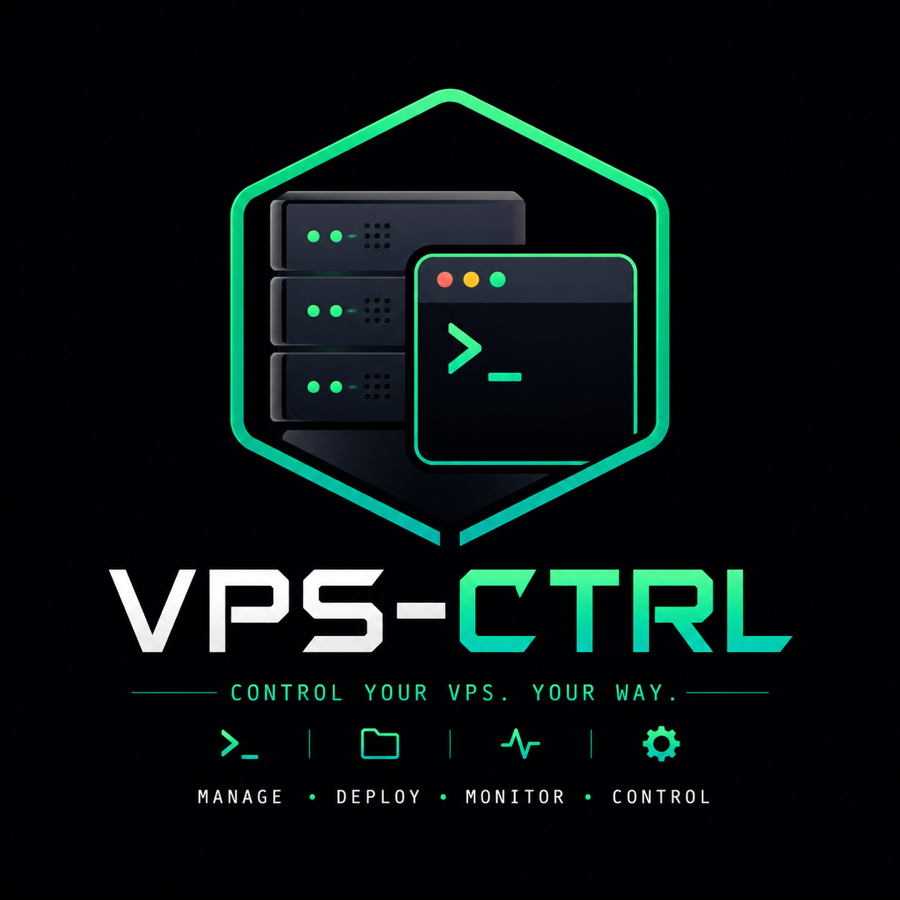

ULTIMATE VPS MANAGEMENT COMMAND CENTER
VPS-CTRL is a lightweight, high-performance dashboard designed for developers who need full control over their remote servers without the overhead of heavy enterprise tools. It combines real-time monitoring, a robust file explorer, an integrated code editor, and a full interactive terminal into a single, secure web interface.
High-resolution CPU and RAM monitoring with interactive mini-graphs and usage history tracking.
New! Real-time process explorer that automatically detects running apps, their PIDs, and active ports.
Real pseudo-terminal integration via WebSockets. Run interactive apps like htop, nano, and vim natively.
Built-in Monaco Editor (VS Code core) with syntax highlighting, auto-detection, and remote saving functionality.
Advanced explorer with hidden file support. The terminal automatically syncs its path to your navigation.
Industrial-grade authentication using JWT, HttpOnly secure cookies, and strict environment isolation.
Follow these steps to initialize your control center:
# 1. Clone the core
git clone https://github.com/chriz-3656/VPS-CTRL.git
# 2. Install dependencies
cd VPS-CTRL
npm install
# 3. Configure environment
cp .env.example .env
nano .env
# 4. Launch system
npm startVPS-CTRL uses a hardened security stack to ensure your terminal remains private. All sessions are protected by encrypted JSON Web Tokens (JWT) stored in secure, read-only cookies.
EADDRINUSE conflicts instantly.